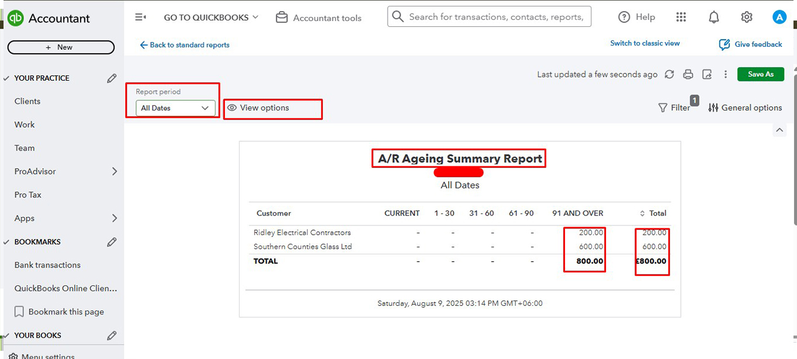
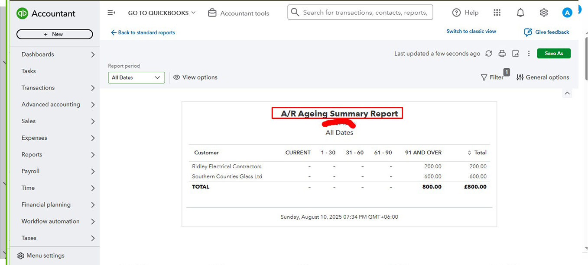
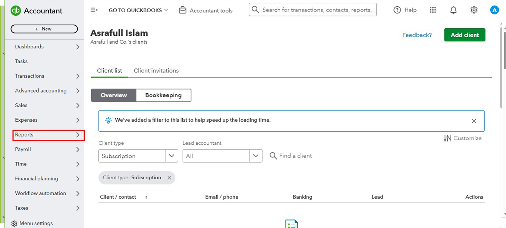
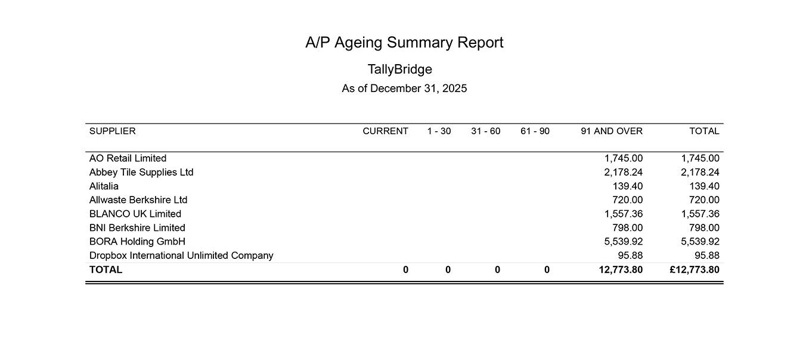
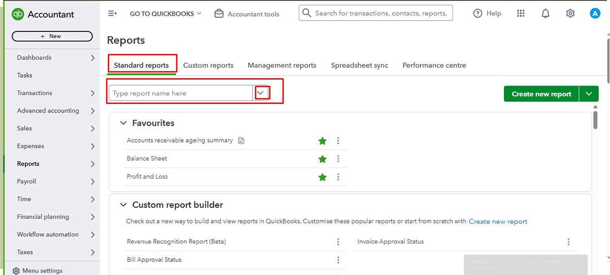
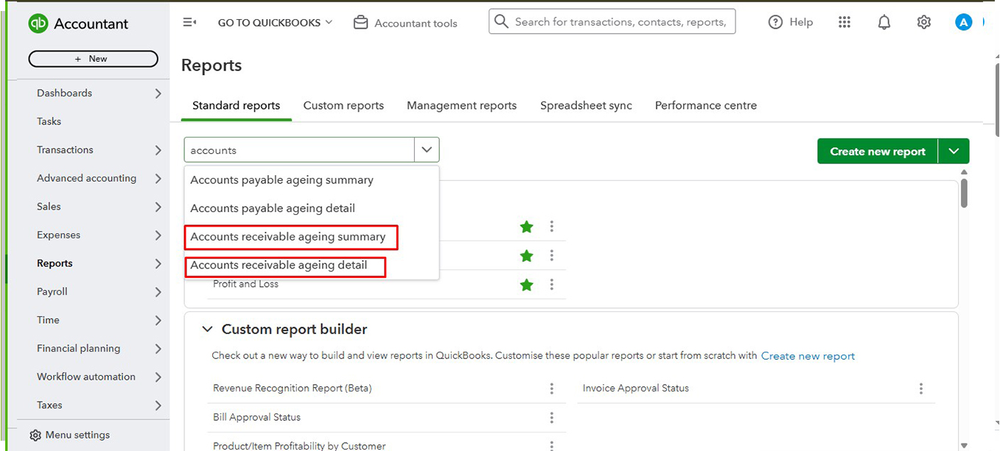

Back to QuickBooks Portfolio


QuickBooks Accounts Receivable
Professional QuickBooks Online Accounts Receivable management, customer invoicing, payment recording, outstanding balance tracking, customer statements and accounts management.
Project Overview
This project demonstrates the complete QuickBooks Online Accounts Receivable workflow. It includes creating customer invoices, recording customer payments, tracking outstanding balances, reviewing aging reports, managing customer statements, and ensuring accurate accounts receivable records.
Skills Used
- ✔ Customer Invoicing
- ✔ Receive Payments
- ✔ Accounts Receivable Management
- ✔ Customer Statements
- ✔ Aging Reports
- ✔ Outstanding Balance Tracking
- ✔ Payment Recording
- ✔ Financial Accuracy
Project Screenshots
Project Screenshots





